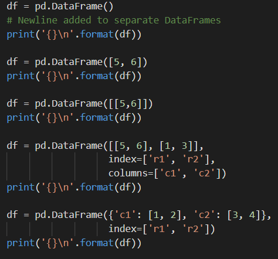

Learn about the pandas DataFrame object and its basic utilities
Write code to create and manipulate a pandas DataFrame
2-D data
One of the main purposes of pandas is to deal with tabular data, i.e. data that comes from tables or spreadsheets. Since tabular data contains rows and columns, it is 2-D. For working with 2-D data, we use the pandas.DataFrame object, which we'll refer to simply as a DataFrame.
A DataFrame is created through the pd.DataFrame constructor, which takes in essentially the same arguments as ps.Series. However, while a Series could be constructed from a scalar (representing a single value Series), a DataFrame cannot.
Furthrmore, pd.DataFrame takes in an additional columns keyword argument, which represents the labels for the columns (similar to how index represents the row lables)

Note that when we use a Python dictionary for initialization, the DataFrame takes the dictionary's keys as its column labels.
Upcasting
When we initialize a DataFrame of mixed types, upcasting occurs on a per-column basis. The dtypes property returns the types in each column as a Series of types.
The code below shows how upcasting works in DataFrames. You'll notice that upcasting only occurs in the first column for the DataFrame below, because the second column's values are both integers.
Appending rows
We can append additional rows to a given DataFrame through the append function.The required argument for the function is either a Series or DataFrame, representing the row(s) we append.
Note that the append function returns the modified DataFrame but doesn't actually change the original. Furthermore, when we append a Series to the DataFrame, we either need to specify the name for the series or use the ignore_index keyword argument. Setting ignore_index=True will change the row labels to integer indexes.
Dropping data
We can drop rows or columns from a given DataFrame through the drop function. There is no required argument, but the keyword arguments of the function gives us two ways to drop rows/columns from a DataFrame.
The first way is using the labels keyword argument to specify the labels of the rows/columns we want to drop. We use this alongside the axis keyword argument (which has default value of 0) to drop from the rows or columns axis.
The second method is to directly use the index or columns keyword arguments to specify the labels of the rows or columns directly, without needing to use axis.
Similar to append, the drop function returns the modified DataFrame but doesn't actually change the original.
Note that when using lables and axis, we can't drop both rows and columns from the Dataframe.